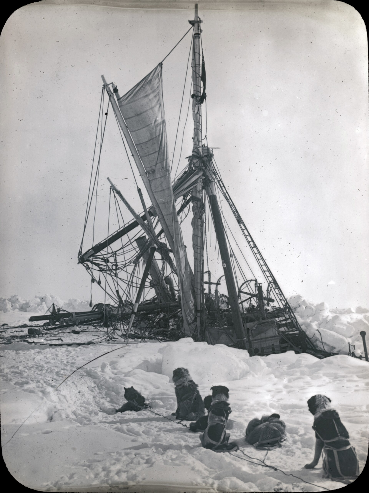

Chapter 10
The Vessel of Salvation
The boats rowed north, into the gray light. But the open water did not last. Within hours, the pack closed around them again, forcing a return to the ice and a reckoning with what they had salvaged and what they had lost. Three lifeboats sat on the frozen surface beside splintered crates and canvas, their gunwales low against the white plain, their hulls utterly inadequate for the voyage that now confronted twenty-eight men.
The Endurance had gone down on 21 November 1915, slipping beneath the ice of the Weddell Sea after weeks of crushing pressure that no wooden hull could resist. The ship’s log, faithfully kept to the last, recorded the final position: 68° 38’ South, 52° 58’ West. Everything now depended on what the ice had allowed them to save.
Shackleton walked the perimeter of the camp on the afternoon of 23 November, examining the three boats as they rested on sledges. The James Caird, at twenty-two feet, was the largest. The Dudley Docker measured eighteen feet. The Stancomb Wills, the smallest, ran to barely twenty feet overall but was narrower and lighter than the Docker. None had been designed for open ocean voyages of hundreds of miles. They were ship’s boats, meant to ferry men and supplies between vessel and shore in protected waters. Their gunwales rose barely two feet from the keel. A following sea would swamp them. A head sea would bury them.
The carpenter, Harry McNeish—known to all as Chippy—stood beside the Caird with a saw in his hand. He was fifty-six years old, the oldest man in the party, and his diary recorded the work with the flat precision of a man who measured his world in boards and fastenings. The boats were too low in the water, he wrote. They would have to raise the sides if they were to have any chance.
The problem was straightforward. The solution required materials that no longer existed. The Endurance had carried timber for exactly this contingency—planks and boards stored in the hold against the possibility that the boats might need modification. That timber now sat at the bottom of the Weddell Sea, along with the spare spars, the reserve rations, the scientific instruments, and every comfort that had made the expedition possible.
What remained was salvage. The men had rescued what they could before the ship disappeared: cases of food, canvas, sledging gear, a few tools, and the three boats themselves. From these fragments, they would have to build vessels capable of carrying twenty-eight men across the wildest ocean on earth.
McNeish began with what he had. The sledges that had carried the boats across the ice could be broken down for lumber. The spare spars from the ship’s rigging, salvaged before the final plunge, provided longer pieces. Canvas from the tents and from the ship’s stores could be stretched and sealed. Rope, nails, bolts—each item was catalogued and hoarded.
The work started on 24 November. The temperature stood at fifteen below freezing, and the wind cut across the floe from the southeast. McNeish’s hands, stiff with cold, fumbled with the saw as he shaped the first plank to fit the Caird’s transom. The wood was hard, frozen almost to the density of iron, and each cut sent up a spray of ice crystals that settled on his beard.
Frank Worsley, the captain of the lost Endurance, crouched beside the boat with a notebook in his hand. His navigation calculations would determine how the cargo must be stowed to keep the craft trim and seaworthy. Every pound of weight, every case of provisions, every sleeping bag had its assigned place. The boats could not be overloaded forward or they would plunge into the seas. They could not be overloaded aft or they would broach and capsize. The margin for error was inches.
The freeboard—the distance from the waterline to the gunwale—was the margin between life and death. A boat with six inches of freeboard would ship water in any sea. A boat with eighteen inches might survive. The Caird, properly loaded, would have perhaps twenty inches. The Docker and the Wills would have less.
Shackleton moved between the work parties, checking progress, offering suggestions, and occasionally issuing orders. His authority had shifted with the loss of the ship. He was no longer the commander of a vessel but the leader of a tribe on the ice, and his decisions now carried the weight of survival rather than expedition. He understood, perhaps more clearly than anyone, that the boats represented their only chance.
The ice might carry them to safety, or it might carry them further into the Weddell Sea, away from land, away from rescue, into the latitudes where no ship could reach them. The drift had carried them north since February, but the pace was agonizingly slow. On 22 February 1915, the Endurance had reached her most southerly latitude at 76° 58’ South before the pack reversed and began its slow drift northward. They were now at approximately 68 degrees south, still four hundred miles from the nearest land, still trapped in ice that might or might not release them.
The modifications to the boats proceeded in parallel, each craft receiving attention according to its needs. McNeish focused on the Caird, the largest and most seaworthy of the three. He cut planks from the salvaged sledges, shaping them to fit along the existing gunwales and extend the sides upward. The joints were difficult—the original boat was built of Baltic pine, the salvage lumber of whatever wood the sledges had been made from—and the fit was never perfect. Canvas strips, nailed over the seams and painted with boiled linseed oil, provided the seal.
The work required heat. Linseed oil would not penetrate frozen wood, and nails would not drive into planks that were solid with ice. The men built a small fire on the ice, fed with broken crates and splintered planks from the wreckage, and McNeish held each board over the flame until the frost melted and the grain opened. Fire on a floe surrounded by frozen sea, with no margin for accident, was dangerous work—but the alternative was worse.
Alexander Macklin, the expedition’s surgeon, watched the carpenter work and recorded his observations in his diary. The entry noted McNeish’s skill with wood, how his frozen hands and aching joints nevertheless shaped each piece as if he worked in his own shop at home. Without him, the surgeon wrote, they should have no chance at all.
The Docker received similar treatment, though with less care. The second boat would carry fewer men and less gear, and her role in any escape would be secondary to the Caird. McNeish raised her gunwales with what material remained, fitting canvas screens along the sides to keep out the spray. The Wills, the smallest and least seaworthy, got the least attention. She would carry six men at most, and her primary role would be to follow the larger boats, taking whatever overflow the others could not manage.
The stowage problem consumed Worsley’s attention. He had navigated the Endurance through the pack ice for nearly a year, learning the rhythms of the Weddell Sea, calculating drift and current and wind. Now he applied those skills to a different problem: how to fit three weeks of provisions for twenty-eight men into three open boats that were already overloaded with their human cargo.
Each man would need roughly two pounds of food per day. Three weeks meant forty-two pounds per man, or roughly twelve hundred pounds total. The boats could carry perhaps three thousand pounds of cargo in addition to their crews, assuming the weather remained calm and the seas moderate. But the Southern Ocean did not remain calm, and moderate seas were the exception rather than the rule.
Worsley’s notes, preserved in his navigation book, show the calculations in neat columns. The Caird would carry ten men and 420 pounds of provisions. The Docker would take nine men and 380 pounds. The Wills, smallest of the three, would carry six men and 250 pounds. The figures were optimistic. The actual loads would be higher, the margins thinner. Each boat also carried cooking gear, sleeping bags, spare clothing, tools, and the inevitable accumulation of small items that men refused to abandon.
The provisions themselves had been salvaged from the ship before she sank. The expedition had carried stores for a year, intended to support the transcontinental crossing and the shore party. Most of those stores had gone down with the Endurance. What remained was what the men had managed to drag onto the ice in the final hours: cases of biscuits, tins of meat, bags of sugar and milk powder, and a few precious containers of dried vegetables. The total was enough for perhaps three weeks, perhaps four if they rationed strictly.
Strict rationing had already begun. Shackleton had ordered the reduction of food allowances within days of abandoning ship, cutting the daily issue to preserve what they had. The men grumbled—some openly, some in their diaries—but they understood the necessity. The alternative was starvation.
The boats required more than provisions. They needed masts and sails, oars and rowlocks, rudders and steering gear. The Endurance had carried spare spars, and these had been salvaged before the sinking. McNeish shaped them into masts, fitting each boat with a simple rig that could be raised and lowered as conditions demanded. The sails came from the ship’s canvas stores, cut and sewn by hand, reinforced at the corners, fitted with grommets for the lines.
The work proceeded in a kind of frozen frenzy. The men knew that the ice might open at any moment, that a lead might appear, that the opportunity to launch might come without warning. They worked through the daylight hours, which stretched to perhaps eight hours at this latitude in late November, and they worked by the light of lanterns in the evening, burning precious fuel to extend the time available.
The temperature dropped as December approached. The diaries record readings of twenty below, thirty below, forty below. The cold was not merely uncomfortable; it was dangerous. Fingers froze and lost feeling. Faces developed frostbite. The men worked in shifts, rotating between the boats and the shelter of the tents, warming themselves at the blubber stove that burned seal fat killed on the floe.
Seal meat had become a primary food source. The expedition had brought dogs, and those dogs had been shot in the early days of the ice camp, their meat added to the rations. But the seal population on the floes provided a renewable resource, if the men could catch them. The hunting parties went out daily, stalking the dark shapes on the ice, killing what they could and dragging the carcasses back to camp.
The meat went into the boats. Every pound of seal meat was a pound of preserved provisions that could be saved for later. The men ate the fresh meat now, cooking it over the blubber stove, boiling it into stews with whatever vegetables remained, and stored the tinned food for the voyage. The calculation was risk against risk: eat the preserved food now and save the fresh meat for the boats, or eat the fresh meat now and save the preserved food for later. Shackleton chose the latter.
The boats began to take shape. The Caird, with her raised gunwales and fitted canvas, looked almost seaworthy. She sat on her sledge, her hull painted with the linseed oil mixture that McNeish had prepared, her mast lashed along the gunwales, her sail bundled in the bow. The Docker and the Wills flanked her, smaller and less finished but recognizable as vessels rather than mere hulls.
The men gathered around them in the evening, examining the work, discussing the prospects, arguing about the best course. The arguments were inevitable. Some men wanted to launch immediately, to take their chances on the open water rather than wait for the ice to decide their fate. Others argued for patience, for letting the drift carry them closer to land, for conserving their strength and their provisions until the moment was right.
Shackleton listened to both sides. His diary does not record his private thoughts, but his actions speak to his decision. He ordered the boats prepared but not launched. He ordered the provisions stowed but not distributed. He ordered the men to continue their routines, to maintain their discipline, to act as if the expedition were still in progress rather than reduced to survival.
The discipline mattered. On 5 December 1914, Shackleton’s expedition had traveled via the ship Endurance from South Georgia for the Weddell Sea, on the first stage of the Imperial Trans-Antarctic Expedition. They had been making for Vahsel Bay, the southernmost explored point of the Weddell Sea at 77° 49’ South, where a shore party was to land and prepare for a transcontinental crossing of Antarctica. That crossing would never happen. The Endurance had been caught in the ice before reaching her destination, trapped by the same pack that now held the boats and men in its grip.
But the structure of the expedition remained. The hierarchy of command, the assignment of duties, the daily routine of meals and watches and work parties—all of these persisted, transferred from the ship to the ice camp and now to the boats. The men knew their places. They knew whom to obey and whom to trust. That knowledge, more than any piece of equipment, would carry them through what lay ahead.
The boats were named. The James Caird had been donated by its namesake, a Scottish jute manufacturer and patron of the expedition. The Dudley Docker took its name from another benefactor. The Stancomb Wills honored a third. The names connected the vessels to the world of money and influence that had made the expedition possible, a world that now seemed impossibly distant.
McNeish completed the final modifications on 5 December. His diary entry is characteristically brief, noting that the Caird was finished and would float, if the ice let them launch her. The carpenter had done what he could. The rest was in the hands of the sea and the ice.
The provisions were stowed. Worsley’s calculations determined the placement of each case, each bag, each bundle. The heavy items went in the bottom of the boats, under the seats, to lower the center of gravity. The lighter items went on top, where they could be reached if needed. The sleeping bags and spare clothing were stuffed into whatever spaces remained, filling gaps and providing some insulation against the cold.
The boats were ready. They sat on their sledges, waiting for the ice to open, waiting for the word to launch. The men looked at them with a mixture of hope and dread. The boats represented salvation, but they also represented risk. Once launched, there would be no return to the ice, no shelter except what the hulls provided, no safety except what the men could make for themselves.
The ice held them still. The floe on which they camped drifted slowly northward, carried by currents that no one could see, pushed by winds that came and went without warning. The position changed daily, recorded in Worsley’s navigation book with the same precision he had applied to the Endurance’s course. They were at 68° 38’ South on 21 November. By early December, they had drifted perhaps fifty miles north, still four hundred miles from the nearest land, still trapped in the pack.

The land they sought was Elephant Island, a rocky outcrop at the northern edge of the South Shetland chain. It lay closest to their current position, though “close” was a relative term in the Weddell Sea. The distance was roughly three hundred miles as the crow flew, but ice and currents and winds would determine the actual course. A boat could not sail in a straight line across ice. It had to follow the leads, the open channels that appeared and disappeared without warning, that opened one moment and closed the next.
The alternative was to wait. The ice might carry them past Elephant Island, out into the open ocean, where the boats would face the full force of the Southern Ocean without the protection of the pack. Or the ice might carry them toward land, depositing them on a shore where they could wait for rescue. The choice was not really a choice. They would launch when they could, not when they wished.
The days passed. The work continued. The boats were ready, but the ice did not open. The men waited, and the ice held them.
On 7 December, a crack appeared in the floe near the camp. Not large—but a sign. The pressure that had crushed the Endurance had not disappeared; it had merely shifted, pressing against the ice from different directions, creating new fractures and new openings. The men watched the crack widen, wondering if it would become a lead, a channel, a way out.
Shackleton ordered the boats prepared for launch. The sledges were positioned, the ropes attached, the men assigned to their places. The Caird would go first, carrying Shackleton and nine others. The Docker would follow, under the command of Frank Wild, the expedition’s second-in-command. The Wills would bring up the rear, commanded by Hubert Hudson, the navigator.
But the crack did not widen. It stopped, then froze over, then disappeared beneath new ice. The opportunity, if it had been an opportunity, was gone.
The men stood down. The boats returned to their positions on the sledges. The waiting resumed.
The psychological strain was worse than the physical labor. The men could endure cold and hunger and exhaustion; they could measure their progress in planks cut and nails driven. But they could not measure the waiting. They could not know when it would end, or how. They could only watch the ice and the sky and the horizon, searching for signs that never came.
McNeish wrote in his diary of men in a prison, waiting for a pardon that might never come. The carpenter was not a man given to poetry, but his frustration was evident. He had built the boats. He had done his work. Now he wanted to see them float.
The expedition’s photographer, Frank Hurley, had salvaged his cameras and some of his glass plates from the sinking ship. He moved through the camp, recording the work on the boats, the faces of the men, the endless white expanse that surrounded them. His images would later become famous, visual evidence of what the expedition had endured. But in the moment, they were simply records, attempts to fix a fleeting reality before it disappeared.
The reality was stark. Twenty-eight men on a floating piece of ice, three boats that might or might not carry them to safety, and an ocean that seemed determined to keep them trapped. The odds were not good. The history of Antarctic exploration was filled with stories of men who had set out and never returned. The Scott expedition, lost on the barrier four years earlier, was fresh in memory. The men knew what failure looked like.
But they also knew what success looked like. Shackleton had returned from the Antarctic before, having walked further south than any man in history. He had brought his men through the Nimrod expedition without losing a single life. He had a reputation, and the men trusted that reputation, even when the evidence around them suggested that trust might be misplaced.
The boats were the physical expression of that trust. They were not much—three open hulls, some canvas, some rope, some nails—but they were what the expedition had. They were the tools of survival, the vessels of salvation. If the men were to escape, they would escape in these boats, or they would not escape at all.
The work continued through December. The boats were checked and rechecked. The provisions were inventoried and reinventoried. The men drilled, practicing their positions, learning how to launch and row and sail in the tight formations that Shackleton demanded. The ice might open tomorrow, or next week, or next month. When it did, they would be ready.
The camp took on a permanent feel. The tents were arranged in a rough circle, with the boats at the center. The blubber stove provided heat and cooking. The seal hunts provided fresh meat. The routines of the ship had become the routines of the ice, and the men adapted as men will, finding comfort in the familiar even when the familiar had been reduced to the bare minimum.
McNeish’s final entry for December records the completion of the work. The boats were ready. They waited for the ice to let them go. The carpenter had done his part. The navigator had done his. The commander had done his. Now they waited for the ice to do its part, to open a channel, to provide a way out.
The three modified boats, loaded and ready on the ice, present a set of tools that makes the ensuing wait both a possibility and a new form of pressure.